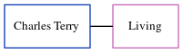

Annie Mount (née Shaw) c1874 -
[ Home ] | [ Calendar ] | [ Surnames Index ] | [ Errors ] | [ Family History ]Annie Shaw, the wife of Edwin Henry Mount (the great-great-uncle of Nigel Horne), was born c. 1874. She married Edwin (a boatman) at Christ Church, Herne Bay, Kent, England on 23 Jun 1904.
Media
Canterbury Marriages Transcription - GBPRS-CANT-M-97074273-1
Kent, Canterbury Archdeaconry marriages 1538-1928 - GBPRS/CANT/M/97074273/2
England & Wales marriages 1837-2008 - BMD/M/1904/2/AZ/000344/167
Kent, Canterbury Archdeaconry banns 1754-1928 - GBPRS/CANT/M/94100379/2
Family Tree
Map
Generated by ged2site. Last updated on Jul 3, 2024
Known Issues
Birth date (abt 1874) has no citations
Marriage date (23 Jun 1904) has no citations
Date of birth is known, but not place